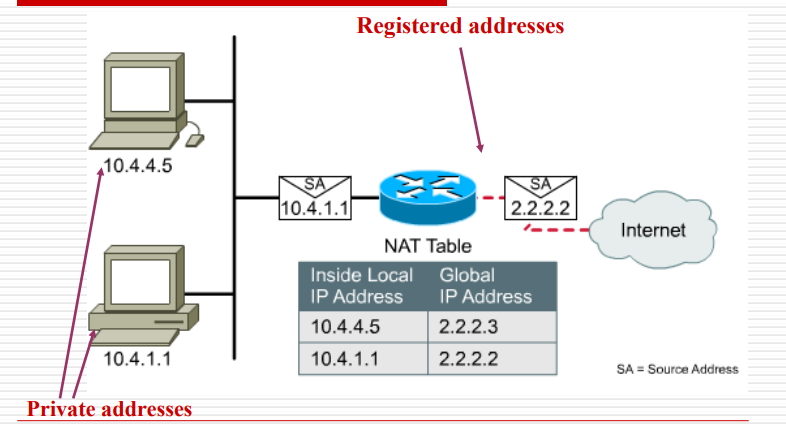

传输层
第四层：主要是实现了主机之间的通信，数据通信是服务于主机上的会话进程。
一、第四层概述
第四层的功能：
- 分割上层应用程序数据，第四层只会在终端设备上有，在中间设备是没有的
- 建立端到端的运营。（end to end）
- 完成可靠性检验，接收方认为数据错误，在第四层进行要求重传。
- 流量控制和可靠性：需要外国人重复他的话并慢声说话。
第四层重要协议：
1、传输控制协议TCP，是可靠传输
2、用户数据报协议UDP
TCP：可靠，效率比较低，面向连接（需要建立三次握手建立连接关系），重新发送丢失或错误的任何内容，需求质量高而不是速率高
UDP：不可靠，无连接，不使用确认，不进行流量控制，直接丢弃错误的报文，需求速率高而不是质量高
服务模型
TCP 和 UDP都使用端口来跟踪（track）同时穿越网络的不同进程
端口分配规范：
- 0-255：保留给TCP和UDP的公共应用程序使用，
- 0-1023：熟知端口，有分发规范，不应该随意使用。
- 1024-49151：进行登记使用，需要避免使用已经被某些应用程序使用的端口来避免冲突。
- 49152-65536：短暂端口号，和远端通信。
- 基于端口号的不同进行不同的分发。
套接字：
- 表示：（IP地址+端口号）
- 每个连接都表示为（source套接字，destination套接字），属于点对点全双工通道
- 通讯：一个socket和另一个socket之间的连接
二、传输控制协议TCP
TCP解决的问题
1、可靠传输
2、流传输（流量控制）
3、连接控制（三次和四次握手）
TCP数据段：

首部：固定长度：20字节
- 源端口、目的端口：2+2字节
- 序号字段：4字节（4G），指本报文段所发送的数据的第一个字节的序号。从小到大，到达最大之后会重新开始。
- 确认号字段：4字节，期望收到的下一个报文的数据段的第一个字节序号（体现了全双工通信的优点）
- 数据偏移：4字节，TCP报文段数据处起始处与整个报文起始处的距离，单位是字（32位），如果数据不满完整一个字，需要使用填充位保证为4字节的整数倍
- 保留字段：6位，今后使用，置0
- URG：=1时表面有紧急数据需要尽快传送
- ACK：=1时确认号字段有效
- PSH（PuSH）：尽快地交付接收应用进程，而不再等到整个缓存都填满了后再向上交付。
TCP 在正常条件下要缓存满了，保证网络可信的时候才发送 - RST：=1 时，表明 TCP 连接中出现严重差错（如由于主机崩溃或其他原因），必须释放连接，然后再重新建立运输连接
就是重新来过，如果请求方发送的请求，如果应答方不想连接则将 ReSet 置为 1 - SYN：=1：表示这是一个连接请求或连接接受报文（初始的时候才出现）
- FIN（FINish）：用来释放一个连接。FIN = 1 表明此报文段的发送端的数据已发送完毕，并要求释放运输连接。
- 窗口：2字节，向发送方说明可以进行传输的窗口大小是多少，即告诉接收方最多能发给我多长的数据，单位为字节
- 检验和：2字节，检验的范围包括首部和数据这两部分
- 紧急指针字段：2字节。指出在本报文段中紧急数据共有多少个字节（紧急数据放在本报文段数据的最前面）
- 选项
TCP 最初只有一种选项，即最大报文段长度 MSS（Maximum Segment Size）
MSS 告诉对方缓存所能接收的报文段的数据字段的最大长度是 MSS 个字节
数据字段加上 TCP 首部才等于整个的 TCP 报文段
填充字段
填充字段：这是为了使整个首部长度是 4 字节的整数倍。
TCP协议
主机使用网段（TPDU）交换数据
-
网段：segment。（数据链路层：frame，网络层：packet，传输层：segement。大小通常是：数据<segment<packet<frame。越往下封装发送数据的单位越大。）
-
每个段都有：部为 20 个字节（可选部分除外）+ 0 或更多数据字节（请求连接的时候）
-
段的大小和IP数据包匹配，并且还需满足底层要求（以太网MTU最大传输单位为1500字节）
-
面向字节传输（TCP传输的数据块可以和上层给的数据块大小不对应（与UDP不同））
可靠传输：红蓝军问题：
- 两方必须同时对敌军发动攻击。一方向另一方发送信息，另一方需要确认。收到确认以后，还需要对确认进行确认，然后另一方需要对确认确认的确认进行确认，一直循环下去。因此无论通信多少次都不能确定一个完全可信的时间。
建立可靠连接
TCP：三次握手

- A主动打开连接，而B被动打开连接
- 第一次握手：客户端向服务器发送连接请求报文（其中的SY同步位为1，初始序号seq为x），同时变为syn-sent状态。
- 第二次握手：服务器从LISTEN变为ACCEPT（Syn-Received）状态，如果同意连接就发送确认。报文中的SYN和ACK都为1，并且携带自己的seq为y，ack中为x的seq中携带的x再加1。
- 第三次握手：客户端收到后进入Established连接建立状态，并且向服务器发送ACK确认报文。ACK置为1，并再将seq置为x+1，而ack置为刚刚收到的y在加1.
- 然后服务器端也进入了Established连接建立阶段。
当完成三次握手的连接过程后，就会通知上层的应用程序。
停止等待协议

发送段后，暂时保留备份（供重传使用）（收到确认后就会丢弃备份）
当对方应答超过一定时间后就直接进行重发，并且重发时间必须超过平均传输时间*2
效率很低，实施控制，来进行错误处理
每个segment和 ACK 必须具有 ID
丢失确认和确认延迟

- 发过去没有应答或者丢失：进行重传
- 应答超时，有收到请求立即重传
- 晚到的应答直接丢弃（不做处理）
可靠通信
自动重传请求ARQ：重新发送请求为自动发送，并且无需请求发送方重新发送错误段。
连续ARQ协议

- 发送方拥有一个发送窗口，指示一些已经发送和即将发送的数据。发送方维护一个指向即将发送的数据（位于窗口中间），指针左边为已发送但未被确认，右边为可发送。
- 发送数据时可以收到对方的确认。每收到一个确认，就将发送窗口向前移动一定单位。
- 接收端也有一个接收窗口，用来表示允许接收的数据。当接收到一定数据后，就会窗口就会后移，同时向发送方发送ACK报文，并说明还可发送多少数据。
- 如果接收窗口为0，那么就无法再接收数据。发送窗口如果全部发送出去但是一个确认都没收到，那么也无法继续发送其他数据，只能重发。
假如发送方要发送900字节长的数据，可以先划分为9个100字节长的报文段，而发送窗口为500字节。发送方发送了400字节数据时收到了对前200字节的确认。发送窗口向前移动，为200-700字节，还可发送300字节。然后发送端收到了对前400字节的确认，但是通知发送端把窗口减小到400字节。于是发送窗口变为了400-800字节，此时还可以最多发送400字节数据。
注意：接收端发送的ACK中的是发送方可发送的下一个数据的起始序号。
释放连接

四次握手：
- 第一次握手：客户端发起断开连接请求，将FIN置为1，并让初始序列号seq为u，然后进入Fin-Wait-1状态
- 第二次握手：服务器收到了客户端发来的断开连接请求，于是发送确认信号，将ACK置为1，并且自己携带序列号v，在ack中放接收到的u再加1，然后服务器接入Close-Wait状态，自己等待一端时间。客户端收到以后就变为Fin-wait-2状态，等待服务器再次发送断开消息。
- 第三次握手：服务器等待一段时间后再次发送请求，让客户端断开连接。将Fin置为1，并且ACK也为1，同时seq则更换了新的w字段，ack仍然与上次相同，为u+1。然后接入lask-ack状态。
- 第四次握手：客户端收到服务器的允许断开信号后就发送确认信号，然后进入time-wait状态，等待一段时间（2MSL）后就直接关闭。而服务器收到了确认信号之后也直接关闭。
注意：在客户端进入closed状态前必须等待2MSL（MSL为最长报文段寿命）的时间，这是为了确保A 发送的最后一个 ACK 可以到达 B，同时可以确保连接上的所有段均已消失
TCP中的计时器
- 重传计时器：决定多长时间进行重传
- 坚持计时器：用于防止死锁（发送端收到得知接收端的接收窗口为0，于是不发送数据。接收端在处理完数据后发送了新的窗口大小的确认信号但是丢失，于是发送端以为窗口还是满的，但是接收端以为发送端已经发送了数据，正在等待接收，于是死锁）计时器可以让发送端收到窗口为0的报文段时每隔一段时间发送一个探测报文来告诉接收端确认报文丢失的事情。
- 保活计时器：防止客户端突然故障。如果没收到消息就每隔一段时间（第一次两小时，之后75分钟）发送探测报文段，如果连续数次（10次）没有收到客户端的响应则自动断开连接（认为客户端出现了故障）
- 时间等待计时器：客户端断开连接时的等待时间
TCP有限状态机

粗线：正常的服务器端
虚线：正常客户端
细线：异常状态的问题
三、用户数据报协议UDP
为什么需要UDP？没有建立连接，快速；没有拥塞控制；可以按照期望速度传输
无连接：没有握手，每个UDP段独立处理，容忍损失（需求速率快而不是质量高（流媒体、多媒体等））
用途：RIP（定期发送路由信息），DNS（快速找到IP地址），SNMP(拥塞时保证可以允许)
UDP数据帧格式

UDP首部只有8个字节，其中的校验位需要对data一并校验，出错丢弃。
UDP不会分片（应用层发多大就传输多大）
TCP和UDP不同：
TCP：缓存满了才同一交付
UDP：直接转发报文，IP进行划分，应用程序选择合适的UDP大小发送
共同点：校验是相同的
四、NAT和PAT
NAT：网络地址转换
- 是在 IP 数据包头中将一个地址交换为另一个地址的过程
- 用于专用地址的主机访问Internet
- IP地址耗尽的解决方案之一

可以将local IP与Global IP互相转换。需要路由器实现
NAT的类型
- 静态NAT：固定一个地址到另一个地址的映射
- 动态NAT：映射先到先得（通过nat pool来实现）
- PAT：端口地址转换，允许许多内部用户映射到（共享）一个IP地址（基于SOCKET映射，一个IP可以有很多端口）
NAT地址类型
- 内部本地地址（Inside Local address），内网IP
- 内部全局地址（Inside Global address）注册地址，用于对外部展示
- 外部全局地址（Outside Global address）外部主机地址，也是注册地址
三个地址都是通过NAT table来翻译的。

NAT的优点缺点
优点：使用少量全局地址来服务大量私有寻址的主机。
缺点：一一映射，没有从根本上解决地址短缺的问题。
PAT工作原理

映射到的是同一个IP地址的不同端口号。